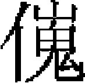

地理志四
雲南諸路行中書省。領路四十二、府七，屬府三，屬州五十六，屬縣五十三。甸寨軍民等府，不在此數。
雲南諸路道肅政廉訪司治中興路。至元二十七年，置雲南行御史臺。二十九年，徙行御史臺於西川，設雲南道肅政廉訪司。三十年，復立行臺。大德二年，罷，復置肅政廉訪司。又至順二年，置雲南等處宣慰司都元帥府，舊《志》不書，當爲元統後所罷。
中慶路。上。唐姚州。南詔蒙氏爲善闡府。至大理段氏，以高智昇領善闡牧，世有其地。憲宗三年，世祖征大理，收府八，善闡其一也。憲宗五年，置萬户府十有九，分善闡爲萬户府四。至元七年，改爲路。八年，分大理國三十七部爲南北中三路，路設達魯花赤并總管。十三年，置雲南行中書省，分置州縣，改善闡爲中慶路。領司一：録事司。縣三：昆明。中。倚郭。憲宗四年，分其地立千户二。至元十二年，改善州，領昆明、官渡二縣。二十一年，廢州存縣。尋又省官渡縣入焉。富民。下。唐匡州。烏蠻酋些門些禾即其地築馬舉籠城，號梨灢甸。至元四年，立梨灢千户所。十二年，改爲富民縣。宜良。下。唐匡州。蠻酋囉氏即其地築囉哀籠城。憲宗六年，立宜良匡城及大池千户所，隸嵩盟萬户府。至元十三年，升宜良州，領大池、匡地二縣。二十一年，州罷爲縣，省二縣入焉。
州四：
嵩盟州。下。舊《志》作嵩明，誤脱「盟」字下半，《明一統志》可證。治沙札卧城。烏蠻車氏等居此，後爲枳氏所奪，因名枳磑。漢人嘗立長州，築金城及阿葛城，與蠻盟，故又名其地曰嵩盟。蒙氏置長州，段氏改嵩盟郡。憲宗六年，置嵩盟萬户府。至元十二年，復改長州。十五年，升嵩盟府。廿二年，降爲州。領縣二：楊林。下。雜種蠻枳氏、車氏、斗氏、麽氏所居。城東門内有石如羊，因名羊林。憲宗七年，立羊林千户所。至元十二年，改爲楊林縣。邵甸。下。治白邑村。車蠻、斗蠻舊名爲東甸，土音以東爲邵。憲宗七年，立邵甸千户。至元二十二年，改爲縣。
晉寧州。下。蒙氏改唐晉寧縣爲陽城堡部，段氏因之。憲宗七年，置陽城堡萬户府。至元十二年，改晉寧州。舊領三縣：晉寧、呈貢、歸化。後併晉寧縣入本州。領縣二：呈貢。下。世爲烏白、些門、些莫、徒阿、茶僰五種蠻所居，號晟貢城。憲宗六年，立呈貢千户所。至元十二年，析詔營、切龍、呈貢、雌甸、塔羅、和羅忽六城及烏納山立呈貢縣。歸化。下。舊爲安江城，有吴氏居之，因名大吴龍，後爲些莫徒蠻永偈所據，世隸善闡。憲宗六年，分隸呈貢千户。至元十三年，割大吴龍、安江、安淜立歸化縣。
昆陽州。下。南寧夷爨翫降，隋拜昆州刺史，即此地。至唐没於南詔。其後大理以高氏治之，名巨橋城。憲宗併羅富等十二城，立巨橋萬户府。至元十三年，改昆陽州。舊領三縣：三泊、易門、河西，後併河西縣入本州。領縣二：三泊。下。僰、獠所居之地，後爲大理所有，以隸善闡。至元十三年，於那龍城置三泊縣。易門。下。治市坪村。烏蠻酋紳磨由男所居之地。段氏時，高智昇治善闡，以高福世守其地。至元四年，立洟門千户所。十二年，改爲縣。縣西有泉曰洟源，譌爲易門。
安寧州。下。唐安寧縣。蒙氏以蠻酋蘇阿褒治之，段氏以善闡酋孫氏爲安寧城主。後袁氏、高氏互有其地。憲宗七年，隸陽城堡萬户府。至元三年，置安寧千户所。十二年，改安寧州。舊領三縣：禄豐、羅次、大甫。後省大甫縣入本州。領縣二：禄豐。下。舊爲禄琫甸白村，烏僰蠻居之，以地瘴熱，遷徙不常。段氏時，高智昇子義勝治其地。至元十三年，割安寧千户所之禄琫、化泥、驥宗龍三處立禄豐縣。因江中有石如甑，蠻語石爲禄，甑爲琫，譌爲禄豐也。羅次。下。治壓磨吕白村，本烏蠻羅部地。至元十二年，置羅次州，隸中慶路。二十四年，改爲縣，隸本州。
威楚開南等路。下。夷名俄碌睒。爨蠻築城居之，城名威楚。蒙氏以此地屬銀生節度。段氏以銀生屬姚州，又名當筋瞼，又改爲白鹿郡，又爲威楚郡。高昇泰執大理國柄，封其侄量成於威楚，築外城號德江城［一］，傳至裔孫長壽。憲宗三年，歸附。六年，立威楚萬户府。至元八年、改威楚路，置總管府。後改宣慰司，又仍爲總管府。舊領威楚、定遠、南寧三縣。後省南寧縣入定遠，改崿嘉千户所爲崿嘉縣。領縣三：威楚。下。倚郭。唐故縣，爲爨蠻所據。元初，立千户所。至元十五年，升爲威州，立富民、净樂二縣。二十一年，降爲威楚縣，併二縣入之。定遠。下。唐髳州。夷名直睒，蒙氏改牟州，以爨酋擡萼守之，築新城曰耐籠。高氏又命雲南些莫徒酋夷羨徙二百户於黄蓬穽。憲宗四年，立牟州千户所，黄蓬穽爲百户。至元十二年，改定遠州，黄蓬穽改南寧縣。後改州爲縣，併南寧縣入之。崿嘉。下。
州四：天曆二年，威楚路黄州土官哀放入貢，乃羈縻州。
鎮南州。下。濮落蠻所居川名欠舍，中有城曰雞和，蒙氏置石鼓縣，又於沙卻置俗富郡，即今州治也。大理時，欠舍、沙卻之地俱爲高氏所有。憲宗三年，内附。七年，置欠舍千户、石鼓百户。至元二十二年，改欠舍千户爲鎮南州，立定邊、石鼓二縣。二十四年，省二縣入本州。州屬尚有安遠一縣，省併年分闕。
南安州。下。黑爨蠻所居寨名摩楚，大理時爲高氏所據。憲宗立摩芻千户，隸威楚萬户府。至元十二年，改爲南安州，隸本路。領縣一：廣通。下。夷名路睒。蒙氏立路睒縣，大理時爲高氏屬地。其後宜州酋些莫徒裔易裒等附之，至高長壽遂移居路睒，築城曰龍戲新栅。憲宗七年，内附，立路睒千户。至元十二年，改爲廣通縣。
開南州。下。蒙氏爲銀生府，分十二甸，昔濮、和泥二種蠻所居。後爲金齒白蠻所據，蒙氏、段氏皆莫能復。中統三年，討平之，以所部隸威楚萬户府。至元十二年，置爲開南州。
威遠州。下。其川有六，昔濮、和泥二種蠻所居。後爲白夷酋阿只步等所據。中統三年，討平之。至元十二年，置爲威遠州，與開南並隸威楚路。
武定路軍民總管府。下。本獹鹿等蠻所居之地。至大理，使烏蠻阿治此，其裔孫法瓦浸盛，併納洟胒共籠等地，以其遠祖羅婺爲部名。憲宗四年，内附。七年，置羅婺萬户府。至元八年，併所隸仁德、于矢二部入羅婺，爲北路總管府。十一年，割出仁德、于矢二部，改本路爲武定。領縣一：
南甸。下。本路所治蠻名瀼甸，又曰洟陬籠。至元二十六年置縣。
州二：
和曲州。下。僰諸種蠻所居，名叵簉甸。蒙氏時，白蠻據其地。至段氏，以烏蠻阿併吞諸蠻聚落三十餘處，分兄弟子姪治之，皆隸羅婺部。憲宗六年，改叵簉甸曰和曲。至元二十六年，升爲州。領縣一：元謀。下。舊名華竹，又曰環州。至元十六年，改爲縣。
禄勸州。下。舊名洪農碌勸甸，易籠蠻所居。至元二十六年，置禄勸州。領縣二：
易籠。下。地名培場，有二水，合流繞城而東。蠻語洟爲水，籠爲城，故又名易籠。羅婺部大酋居之，爲羣蠻會集之地。至元二十六年，置易籠縣。石舊。下。舊有四甸：曰掌鳩，曰法塊，曰抹捻，曰曲蔽。後譌掌鳩爲石舊。至元二十六年，置縣。
鶴慶路軍民總管府。下。夷名其地爲白鶴川及樣共川，隸於越析詔。蒙氏合六詔爲一，於樣共置統謀郡。憲宗三年，内附，爲鶴州。七年，立二千户所，仍稱統謀，隸大理萬户府。至元十一年，罷統謀千户，復爲鶴州。二十年，爲燕王分地，隸行省。二十三年，升爲鶴慶府。尋改爲路。領縣一：劍川。下。夷名義督羅魯城，一名劍川。昔浪穹詔與南詔戰，敗走保劍川，改稱劍浪詔。後爲南詔所併，置劍川節度。大理時，改爲義督瞼。憲宗四年，内附。七年，立義督千户所。至元十一年，罷千户，立劍川縣。
雲遠路軍民總管府。本南詔乞藍夷地。元貞二年，雲南省臣也先不花征乞藍，拔瓦農、開陽二寨，其黨答剌率諸蠻來降，乞藍悉平，以其地爲雲遠路軍民總管府。
徹里軍民總管府。爲倭泥、貉、蒲剌、黑角諸蠻雜居之地。世祖命兀良合 伐交趾，經其地，悉降之。至元中，置徹里軍民總管府，領六甸。按大德中，雲南行省言：乞别立徹里軍民宣撫司。泰定二年，又立車里軍民總管府。疑廢置不常，故罷而復立也。
伐交趾，經其地，悉降之。至元中，置徹里軍民總管府，領六甸。按大德中，雲南行省言：乞别立徹里軍民宣撫司。泰定二年，又立車里軍民總管府。疑廢置不常，故罷而復立也。
廣南西路宣撫司。宋特麽道、儂智高後裔居之。至元中，立廣南西路宣撫司。舊領路城、上林、羅佐、安寧、富州五州。後析路城、上林、羅佐三州隸來安路。本路領州二：
安寧州。下。富州。下。
麗江路軍民宣撫司。烏蠻麽、些所居之地，爲越析詔之屬部。後隸南詔，置麗水節度。宋時，爲蠻酋蒙醋醋所據，段氏莫能制。憲宗三年，世祖征大理，自卡頭濟金沙江，麽、些酋拒守。四年春，討平之，置茶罕章管民官。至元八年，置宣慰司。十三年，改麗江路，置軍民總管府。二十二年，府罷，立宣撫司。領府一：
北勝府。舊爲施蠻之地。南詔異牟尋取之，名北方賧，徙瀰河白蠻及羅落、麽、些諸蠻以實其地，號成偈賧，又改名善巨郡。大理段氏使高大惠治此郡，改名成紀鎮。憲宗三年，其酋高俊内附。至元十五年，立爲施州。十七年，改爲北勝州。二十五年，升爲府。雲南行省言：「金沙江西通安蘭五城，宜依舊隸茶罕章宣撫司。金沙江東永寧等處五城宜廢，以北勝施州爲北勝府。」本府領州三：
順州。下。夷名牛睒。南詔異牟尋徙諸浪人居之，與羅落、麽、些蠻雜處。後羅落蠻酋成斗族漸大，自爲一部，遷於牛睒，至十三世孫自瞠，猶隸大理。憲宗三年，内附。至元十五年，改牛睒爲順州。
蒗渠州。下。夷名羅共睒。羅落、麽、些三種蠻世居之。至元九年，内附。十四年，立寶山、莨渠二縣。十六年，改寶山、莨渠二縣爲州。本屬麗江路，後改屬北勝府。
永寧州。下。夷名樓頭睒，接吐番東徼，地名睒藍。麽、些蠻泥月烏逐出吐番，居此地。憲宗三年，其三十三世孫和字内附。至元十六年，改爲州，屬北勝府。
州四：
通安州。下。夷名三睒，爲越析麽些詔地，併於南詔，僕繲蠻居之，其後麽、些蠻又據之，世屬段氏。憲宗三年，其裔孫麥良内附。中統四年，以麥良爲三睒管民官。至元九年，其子麥兀襲父職。十四年，改爲通安州。
蘭州。下。南詔獹蠻地，名羅眉川，段氏始置蘭滄郡，以董慶者治之。後周氏疆盛，與董氏分爲二部，以蘭滄江爲限。憲宗四年内附，隸茶罕章管民官。至元十二年，改蘭州。
寶山州。下。麽、些蠻地。其先自樓頭徙此。世祖征大理，自卡頭濟江。圍大匱等寨。其酋内附，名其寨曰察罕忽魯罕。至元十四年，以大匱七處置寶山縣。十六年，升州。
巨津州。下。濮、獹二蠻之地，名羅波九睒。後爲麽、些蠻所奪，又爲蒙氏所併，屬麗水節度。憲宗三年，内附。至元十四年，於九睒置巨津州，以橋爲南詔、吐番來往之通津，故名。領縣一：臨西。下。大理極邊之地，夷名羅裒間，居民皆麽、些二種蠻。至元十四年，立臨西縣，以西臨吐番，故名。
東川府路。下。本大理國閟畔部。憲宗時，置萬户。至元十五年，改軍民府。二十八年，罷雲南四州，置東川府。至元十一年，立雲南鄧、川、趙、姚四州。當是罷此四州，置東川府。
茫部路軍民總管府。下。至元中置。領州二：
益良州。下。强州。下。
孟傑路。下。泰定三年，八百媳婦蠻請官守，置木安、孟傑二府於其地。
木安路。下。泰定三年置。
普安路。下。南詔東邊東爨烏蠻七部落居之。其後爨酋阿宋據其地，號于矢部，世爲酋長。憲宗七年，内附，命爲于矢萬户。至元十三年，改普安路總管府。明年，更立招討司。十六年，改宣撫司。二十二年，罷司爲路。
曲靖等路管軍總管府。唐爲曲州、靖州，後没於南詔蒙氏，置石城郡。段氏因之。後爲磨彌蠻酋所據。憲宗六年，内附，置磨彌部萬户府。至元八年，改爲中路。十三年，改曲靖路總管府。二十年，隸皇太子位下。二十五年，升宣撫司。二十八年，以曲靖路宣撫司改立管軍總管府。領縣一：南寧。下。倚郭。唐爲南寧州，治石城，後没於南詔蒙氏，改石城郡。段氏時，烏蠻酋據其地。憲宗三年，内附。六年，立千户所。至元十三年，升南寧州。二十二年，降爲縣。
州五：
陸涼州。下。南詔落温部蠻據其地。憲宗三年，内附，置落温千户所，隸於落蒙萬户。至元十三年，改爲陸涼州。領縣二：芳華。落温部之地，夷名忻歪，又名部封。元初，置千户。後改爲縣。河納。下。治蔡村。蒙氏置陸郎縣。元初，復併於落温部，置百户。至元中，改河納縣。
越州。下。舊爲魯望川，普麽部蠻居其地。憲宗四年，内附。六年，置千户所。至元十二年，改越州。
羅雄州。下。舊爲塔敝納夷甸。相傳槃瓠之裔，有羅雄者，前居此甸。至其孫普恐，名其部曰羅雄。憲宗四年，内附。七年，隸普磨千户。至元十三年，析夜苴部爲羅雄州。領縣一：亦佐。下。本夜苴部地。至元十三年，置縣。
馬龍州。下。夷名撒匡。僰剌蠻居之，後爲納垢蠻部所奪。至羅苴内附，置千户所。至元十三年，改爲州。即馬龍舊城也。領縣二：
馬龍，下。通泉。下。本通泉鄉，納垢蠻之孫易陬分居其地。元初，爲易籠百户，後改爲通泉縣。
霑益州。下。唐爲西平州，又改盤州。後没於南詔，爲僰、剌二種蠻所居。磨彌部又奪之。元初，其孫普垢内附。憲宗七年，以本部隸磨彌萬户府。至元十三年，改霑益州。領縣三：交水。下。治易陬籠城。磨彌部酋蒙提居之。後大理高氏逐其子孫，而有其地。憲宗五年，内附。至元十三年，立爲縣。後至元二年，與羅山、石梁併入巡檢司。石梁。下。石梁山。本伍勒部酋世居其地。至元十三年，立爲縣，後併入巡檢司。二十四年，復立。羅山。下。夷名落蒙山，乃磨彌部東境。至元十三年，立爲縣，後併入巡檢司。
澂江路。下。唐南寧、昆二州地。後没於南詔，名羅伽甸，麽、些蠻居之，又爲僰蠻所奪。蒙氏置河陽郡。大理段氏析爲三部：曰强宗，曰休制，曰步雄。步雄部後居羅伽甸者，又號羅伽部。憲宗四年，内附。六年，置羅伽萬户府。至元三年，改萬户爲中路。十六年，升爲澂江路。領縣三：河陽。下。附郭。歸附後爲千户所。至元十六年，改河陽州。二十六年，降爲縣。江川。下。南詔徙曲旺蠻居此。段氏以些、麽蠻子孫分管其地，名步雄部。憲宗時，其酋弄景内附，置千户所。至元十三年。改千户爲江川州。二十年，降爲縣。又置雙龍縣，旋省。陽宗。下。麽、些蠻居此，號强宗部。憲宗時，其酋盧舍内附，立爲千户所。至元十三年，改爲陽宗縣，譯言强爲陽也。
州二：
新興州。下。唐求州，爲羈縻州。後没於南詔，置温富州。段氏徙些、麽蠻居其地。元初，内附，置部傍、普舍二千户所。至元十三年，改部傍千户爲休納縣，又於休納置新興州，隸澂江路。舊領休納、普舍，研和三縣，後省休納縣入本州。領縣二：普舍。下。强宗部蠻之裔長曰部傍，據普具龍城，次曰普舍，據普札龍城。後普舍孫苴内附，立普舍千户所。至元十三年，改爲縣，治普札龍城。研和。下。步雄部蠻居此。其孫龍鍾内附，立百户，至元十三年，改爲縣。
路南州。下。夷名路甸，有城曰撒吕，黑爨蠻之裔落蒙所築，因名落蒙部。憲宗時，内附，置落蒙萬户府。至元七年，併落蒙、羅迦、末迷三萬户爲中路。十三年，分中路爲二路，改羅迦爲澂江路，落蒙爲路南州。舊領彌沙、邑市二縣。至元二十四年，併彌沙縣入邑市。領縣一：邑市。下。至元十三年，即邑市、彌歪二城立邑市縣，彌沙等五城立彌沙縣，後併彌沙入本縣。
普定路。下。本普里部蠻。元初内附，置普定府。至元二十七年，斡羅思、吕國瑞賄丞相桑哥，請創羅甸宣慰司，奏言：「招到羅甸國札哇并龍家、宋家、犵狫、苗人諸種蠻夷四萬六千六百户。」阿卜、阿牙者來朝，爲曲靖路宣慰司同知脱因及普安路官所阻。雲南行省言：「羅甸即普里也，歸附後改普定府，印信俱存，隸雲南省三十餘年，賦役如期。今創羅甸宣慰安撫司，隸湖南行省。斡羅思等擅以兵脅降普定土官矣資男、札哇、希古等，勒令同其入覲。邀功希賞。乞罷之，仍以其地隸雲南。」從之。大德七年，改爲路。是年，中書省臣言：「蛇節等作亂，普定知府容苴率衆效順。容苴没，其妻適姑亦能宣力戎行，乞令襲其夫職。仍改普定爲路，隸曲靖宣慰司，以適姑爲本路總管，佩虎符。」按舊《志》普定路直隸行省，不隸於宣慰司。未知何時所改。領州四：
永寧州。下。領慕役項營下二寨長官司。
鎮寧州。下。本荒服地。元初始置四州，隸本路。領十二營、康佐二寨長官司。
習安州。下。領寧谷、西堡二寨長官司。
安順州。下。
仁德府。僰、剌蠻之地，號仲劄溢源部。後烏蠻名新丁者奪之，其後號新丁部，又譌新丁爲仁地。或云蒙氏改爲尋甸，段氏改仁德部。憲宗五年内附，明年立爲仁地萬户。至元十三年，改爲仁德府。領縣二：爲美。下。地名溢浦適侣睒甸，即仁地之故部。至元二十四年，置縣。歸厚。下。地名易浪浦籠，舊屬仁地部。至二十四年，置儻俸縣。二十五年，改歸厚縣。
羅羅、蒙慶等處宣慰司都元帥府。至元十二年，置羅羅宣慰司。泰定四年，八百媳婦蠻請官守，改爲羅羅、蒙慶等處宣慰司都元帥府。至正二年，罷。六年，復置八百宣慰司。
建昌路。下。唐雋州中都督府。後爲蒙詔所據，立城曰建昌府，以烏、白二蠻實之。傳至阿宗，娶落蘭部建蒂女沙智。憲宗時，建蒂内附，以阿宗守建昌。至元十二年，析其地置總管府五、州二十三、建昌其一路也。本路領州九：
建安州。下。建昌路治所。元初，置千户二。至元十五年，割建鄉城十四村及建蒂四村，置寶安州。十七年，改本千户爲建安州。二十六年，併寶安州入之。
永寧州。下。在建昌之東郭，名偏城。蒙詔立建昌府，領建安、永寧二州。至元十六年，分建昌爲二州：在城曰建安，在東郭曰永寧。領縣一：
北社。此縣舊志所無，《翰墨全書》有之。《明一統志》：元屬永寧州，明初改爲碧舍。
瀘州。下。舊名沙城瞼。段氏於熱水甸立城曰洟籠，隸建昌。憲宗時内附，復叛。至元九年，平之。十五年，改洟籠爲瀘州。
禮州。下。唐蘇祈縣。後吐番、烏白蠻迭據其地，號籠麽城。至元九年，平其地，置千户所。十五年，改爲禮州。領縣一：瀘沽。羅落蠻所居。後烏蠻據之。自號曰落蘭部，或稱羅落。其酋蒲德遣姪建蒂内附，建蒂復叛殺蒲德自立。至元九年，平之，設千户所。十三年，升萬户。十五年，改爲瀘沽縣。
里州。下。蒙氏時，落蘭部小酋阿都居此，因名阿都部。其後裔納空隨建蒂内附。中統三年，復叛。至元十年，其子耶昒效順，隸烏蒙。十八年，置千户所。二十二年，同烏蠻叛，奔羅羅斯。二十三年，置軍民總管府。二十六年，罷爲州。
闊州。下。州治密納甸，烏蒙之地。其酋仲由蒙之裔名科居此，以名爲部號，後譌科爲闊。至其三十七世孫僰羅内附。至元九年，設千户所。二十六年，改爲州。
邛部州。下。唐邛部縣，後没於蠻。至宋，封其酋爲邛都王，治烏弄城。後麽、些蠻據其地。又爲仲由蒙之裔所奪。憲宗時，内附。中統五年，置邛部州安撫招討使，隸成都元帥府。至元十年，改屬羅羅斯宣慰司。二十一年，降爲州。
隆州。下。唐會川縣之西北境。蒙氏改會川爲會同邏，立五瞼，本州爲邊府瞼。其後瞼主楊大蘭於瞼北塏上立城名大隆城，即今州治。至元十三年，内附。十四年，設千户所。十七年，改隆州。舊置撒里府，領禮州、邛部州、隆州、其改併年分闕。
姜州。下。本會州府龍納城，羅落蠻世居之。烏蠻仲牟由之裔阿壇絳居閟畔部，其孫阿羅仕於大理段氏，奪龍納而有之，以祖名名其部曰絳部。憲宗時内附。至元八年，爲落蘭酋建蒂所破。九年，討平之，遂隸會川，後改屬建昌。十五年，改爲姜州。二十七年，復屬閟畔部萬户府，後又屬建昌。
蘇州。下。本邛都地。蒙氏隸建昌府。元初，内附，立蘇州，屬建昌路。領縣一：中縣。下。縣治在回頭甸，本東門蠻沙麻之地。至元十年，内附。十四年，置中州。二十二年，降爲縣來屬。此縣舊《志》屬建昌路，又無蘇州一州。《明一統志》：蘇州，明初尚因之，後改爲寧番衛，中縣屬蘇州。明初尚因而不廢，舊《志》誤也。
德昌路軍民府。下。蒙氏時屈部蠻所居。至元九年，内附。十二年，置定昌路，以本部爲昌州。二十三年，罷定昌路及德平路，置德昌軍民府，治本州葛魯城。領州四：
昌州。下。路治本州。烏蠻阿屈之裔用祖名爲屈部，其孫烏則至元九年内附。十二年，改本部爲州。兼領普濟、威龍，隸定昌路。二十三年，罷定昌路，併隸德昌。
德州。下。蒙氏時名吾越甸，城曰亦苴龍，所居蠻苴郎，以遠祖名部曰赬綖。憲宗時内附。至元十二年，置千户所。十三年，改爲德州，隸德平路。二十三年，改隸德昌。按德平路，當是入德州，二十三年所罷。
威龍州，下。舊名巴翠部，領小部三：曰沙媧普宗，曰烏雞泥祖，曰媧諾龍蒲，皆獹魯蠻種。至元十五年，合三部立威龍州。
普濟州。下。舊名玗甸，獹魯蠻所居。至元九年，隨屈部内附。十五年，於玗甸立定昌路。二十三年，路廢。改隸德昌路。《翰墨全書》：德昌路屬下有蘇州。《明一統志》：蘇州屬建昌路。今從《一統志》。
會川路。下。唐會川縣。後没於南詔，立會川都督府，又號清寧郡。至段氏，仍爲會川府。至元九年，内附。十四年，置會川路，治武安州，領州五：舊有通安州，省併年分闕。
武安州。下。本名龍泥城。南詔置清寧郡［二］。大理高凌據此。至元十四年，置管民千户所。十七年，改武安州。
黎溪州。下。蠻曰黎彄，譌爲今名。蒙氏徙白蠻居之，後爲羅羅蠻所奪。至元九年，蠻酋阿夷内附，改爲黎溪州。
永昌州。下。治故歸依城。南詔置會同府，立五瞼，徙張、王、李、趙、楊、高、周、段、何、蘇、龔、尹十二姓居之，以趙氏爲府主，後爲王氏所奪。及高氏專大理之政，逐王氏，以其子高政治會川。憲宗三年，征大理，高氏遁去。九年，故酋王氏孫阿龍率衆内附。至元八年，以其子阿禾領會川。十四年，置管民千户。十七年，改永昌州。
會理州。下。舊號昔陀城，蠻酋羅於則據之，其祖名阿壇絳，遂名曰絳部。後盡有四州之地，號蒙歪。憲宗八年，其孫亦蘆内附，隸閟畔萬户府。至元四年，屬落蘭部。十二年，改隸會川路。十五年，置會理州，仍隸會川。二十七年。復隸閟畔部萬户府。大德四年，併閟畔泗州、西州爲一，置爲磨州，其省併年分均闕。
麻龍州。下。本麻籠城地，名棹羅能。烏蠻蒙次次之裔，居閟畔東川，後裔普恐遷苗卧龍，其孫阿麻内附。至元五年，爲建蒂所併。十四年，立管民千户所，隸會川路。十七年，改爲州。二十七年，割屬閟畔部萬户府。
柏興府。舊爲摩沙蠻之地。唐立昆明縣，蒙氏改香城郡。至元十年，其鹽井摩沙酋羅羅將鹿、茹庫内附。十四年，置鹽井管民千户所。十六年，改爲閏鹽州，以鹿部爲普樂州，俱隸德平路。二十七年，併二州爲閏鹽縣，立柏興府。隸羅羅宣慰司。領縣二：閏鹽。下。倚郭。蠻名賀頭甸。金縣。下。蠻酋利竇揭勒所居。至元十五年，立金州。後降爲縣。
臨安廣西元江等處宣慰司兼管軍萬户府本爲臨安廣西道軍民宣撫司，改宣慰司，年分闕。
臨安路。下。唐爲羈縻牂州，後没於南詔。蒙氏置通海郡都督府。段氏改秀山郡，復爲通海郡。蠻酋互相侵奪，或隸善闡，或隸阿僰。憲宗七年，内附，置阿僰部萬户府。至元八年，改爲南路。十三年，又改臨安路。領縣二：河西。下。蠻名休臘。唐初置西宗州，後没於南詔，爲步雄部，阿僰蠻又奪之。憲宗六年，内附。七年，立萬户府，休臘隸之。至元十二年，改河西州，隸臨安路。二十六年，降爲縣。蒙自。下。縣境有山曰自則，漢語譌爲蒙自。南詔以趙氏守其地。段氏時，阿僰蠻居之。憲宗六年内附，繼叛。七年，平之，立千户所。至元十三年，改蒙自縣。
千户一：
捨資千户。阿僰蠻所居地，名褒古，又曰部嫋踵甸。傳至裔孫捨資，因以爲名。内附後，隸蒙自千户。至元十三年，改蒙自爲縣，以其地近交趾，遂以捨資爲安南道防送軍千户，隸臨安路。
州三：
建水州。下。治故建水城，蒙氏所築。每夏秋，溪水漲溢如海，蠻謂海爲惠，大爲，故名惠。漢語曰建水。些、麽徒蠻所居，内附後，立千户所。至元十三年，改建水州，隸臨安路。
石坪州。下。阿僰蠻所居之地，宋曰石坪縣。至元七年，以爲州，隸臨安路。
寧州。下。唐爲黎州，後没於蠻。地名浪曠，夷語旱龍也。步雄部蠻些麽徒據之，後屬爨蠻阿幾，以浪曠割與寧部酋豆圭。憲宗四年，寧部酋内附，置寧部萬户府，後改寧海府。至元十三年，改寧州，隸臨安路。舊領三縣：通海、嶍峨、西沙。西沙，寧部蠻所居，其裔孫西沙築城於此，因名西沙龍。憲宗四年，其酋普提内附，居此爲萬户。至元十三年，置西沙縣。二十六年，以隸寧州。至治二年，併入本州。領縣二：通海。下。倚郭。元初，立通海千户所，隸善闡萬户府。至元十三年，改通海部，隸寧海府。二十七年，府罷，直隸臨安路。後改隸寧州。嶍峨。下。舊爲嶍峨蠻所居，後阿僰蠻酋奪之。至其孫阿次内附，立爲千户所。至元十三年，改爲州，領邛川、平甸二縣。三十六年，降爲縣，併二縣入之，隸臨安路。又改隸寧州。
阿迷萬户府。元初，隸南路總管府。大德中，直隸臨安廣西元江等處宣慰司。按《翰墨全書》：臨安路有阿迷州、王弄州。阿迷州，當由萬户改之。王弄州，當由王弄山大、小二部改之。其建置、省併年分俱闕。
千户所二：
納樓。
茶甸。
廣西路。下。唐爲羈縻州，東爨烏蠻等部所居之地。蒙氏析爲師宗、彌勒二部。憲宗七年，内附，隸落蒙萬户府。至元十二年，籍二部爲軍，立廣西路。十八年，復爲民。至元中，置廣南西宣撫司，其省罷年分闕。
領州三：
師宗州。下。爨蠻師宗據匿弄甸，號師宗部。至元中，以本部爲千户總把，領阿寧、豆勿、阿盧、豆吴四千户，屬廣南西路。後改置師宗州。
彌勒州。下。宋時些、麽徒蠻之裔據其地，號彌勒部。至元中，以本部爲千户總把，領吉輸、裒惡、步籠、阿欲四千户，屬廣南西路。後改置彌勒州。
維摩州。下。元初立維摩千户所，隸阿迷萬户府。至元中，以本部爲千户總把，領維摩、屈中二千户。後改維摩州。
元江路。下。蒙氏爲銀生節度屬地，徙白蠻蘇、張、周、段等十姓戍之，又開威遠等處置威遠瞼。後爲和泥所據，又爲些麽蠻阿僰諸部所有。憲宗四年，内附。七年，復叛。至元十三年，遥置元江府以羈縻之。二十五年，命雲南王討平之，割羅槃、馬籠、步日、思摩、羅丑、羅陀、步騰、步竭、台威、台陽、設棲、彌陀十二部於威遠，立元江路。其屬地曰：
馬籠部千户所。因馬籠山立寨，阿僰蠻所居。元初，立千户所。屬寧州萬户。至元十三年，改隸元江萬户。二十五年，屬元江路。
步日部。蒙氏立此甸，徙白蠻居之，名步日睒。
溪處甸軍民副萬户府。元初置，隸雲南行省，後屬元江路。
虧容甸部。舊爲鐵容甸。
思陀甸部。舊爲官桂思陀部。元初，置和泥路，隸雲南行省。後屬元江路。
落恐甸軍民萬户府。舊爲伴溪落恐部。元初立萬户府，隸雲南行省。後屬元江路。
羅槃部。
思摩部。
羅丑部。
羅陀部。
步騰部。
步竭部。
台威部。
台陽部。
設棲部。
彌陀部。
案版寨。
羅必甸。
帶良甸。
普甸。
部目甸。
落甸。
帶洋甸。
他郎。
因遠。
不通。
沙財。
泥大。
帶思。
奚泥伽。
烏尤。
羅配。
法處。
七十門二處。
大甸。
越甸。
兀好滯。
帶來普勝侣也構甸。
部目司摩。
帶思帶良甸。
因遠羅必甸。
帶違帶羊撒里甸。
馬龍馬郎沙則尼甸。
羅尼羅初不甲甸。
大理金齒等處宣慰司都元帥府中統四年置。
大理路軍民總管府。上。唐姚州，治葉榆洱河蠻。後蒙舍詔皮羅閣併蒙巂詔、越析詔、浪穹詔、邆睒詔、浪施詔，合五詔爲一，號南詔，治大和城。至閣羅鳳，號大蒙國。至異牟尋，又遷於羊苴乖城，即今府治，改號大禮國。後段氏有其地，更爲大理國。憲宗三年，收附。六年，置上下二萬户府。至元七年，併二萬户爲大理路。領司一：
録事司。憲宗七年，立中千户，屬大理萬户。至元十一年，罷千户，立録事司。十二年，升理州。二十一年，復爲録事司。
縣二：太和。下。附郭。唐開元末，皮羅鳳據其地。憲宗七年，於城内外立上、中、下三千户。至元二十六年，改中千户爲録事司，上、下二千户立縣。雲南。下。唐爲雲南州，又改匡州。後張仁果據之，號白子國。蒙氏、段氏並爲雲南州，又稱品甸。憲宗七年，立品甸千户所。至元十一年，復爲雲南州。後降爲縣。
府二：
永昌府。蒙氏、段氏皆爲永昌府。憲宗七年，分永昌之永平縣立千户所。至元十一年，置永昌州。十五年，升爲府，隸大理路府。領縣一：
永平。下。蒙氏爲勝湘郡。至元十一年，改立千户所。後又爲縣。
騰衝府。蠻名越睒。僰、驃、峨昌三種蠻居之。唐置羈縻州。蒙氏取越睒，置軟化府，又改騰衝府。憲宗三年，府酋高救内附。至元十一年，改藤越州，又立藤越縣。十四年，改騰衝府。二十五年，省順江州及藤越、越甸、古湧三縣按越甸，至元中置。古湧置縣年分闕。入之，隸大理路。
州三：
鄧川州。下。夷有六詔，邆睒其一也。唐置邆睒州，治大釐城。蒙氏改德原城，隸大理。段氏因之。憲宗三年，内附，置德原千户所。至元十一年，改爲鄧川州。領縣二：浪穹。下。蠻名彌茨，乃浪穹詔所居之地。後其酋鐸羅望爲南詔所侵，移保劍川，更稱浪劍。貞元中，南詔滅之，以浪穹［三］、施浪、鄧睒總三浪爲浪穹州。憲宗七年，内附，立浪穹千户所。後改爲浪穹州。至元十一年，降爲縣，與鳳羽縣俱隸本州。鳳羽。下。蒙氏細奴邏興，有鳳翔於此，故名。至元十一年，置縣。
蒙化州。下。爲羅羅摩及僰蠻之地。後蒙氏細奴邏築城居之，號蒙舍詔，改稱南詔，改蒙舍城爲陽瓜州。段氏改開南縣。憲宗七年，立千户所。至元十一年，置蒙化府。十四年，升爲路。二十年，降爲州，隸大理路。
趙州。下。羅落蠻所居。蒙氏立十瞼，趙州睒其一也［四］。皮羅閣置趙郡，閣羅鳳改爲州。段氏又改天水郡。憲宗七年，置趙瞼千户所。至元十一年，改爲州，又於白崖瞼立建寧縣隸本州。二十五年，省建寧入本州。
姚安路軍民總管府。唐故州。蒙氏改爲弄棟府。段氏又改姚州。憲宗三年，内附。七年，置統矢千户所、大姚堡千户所。至元十二年，罷統矢，置姚州，隸大理路。天曆間，升姚安路總管府。領縣一：大姚。下。蠻名大姚堡。憲宗七年，立千户所。至元十一年，改爲縣。
十二關防送千户所。本雲南縣楚場地。至正間，因地僻險，立千户所。
蒙憐路軍民府。至元二十七年，從雲南行省請，以蒙憐甸爲軍民總管府，領只迷甸、金井甸。
蒙萊路軍民府。本蒙萊甸，與蒙憐路同時置。領邦毛甸、金齒等處宣撫司。其地在大理西南，土蠻凡八種，曰金齒、白夷、白僰、峨昌、驃、繲渠、羅比、蘇。自漢以來，不與中國通。蒙氏取其地爲大理屬部。及段氏時，金齒諸蠻浸盛。中統初，金齒、白夷諸酋各遣子弟入朝。二年，立安撫司以統之。至元八年，分金齒、白夷爲東西兩路安撫使。十二年，改西路爲建寧路，東路爲鎮康路。十五年，改安撫爲宣撫，置六路總管府。二十三年，罷兩路宣撫司，併入大理金齒等處宣撫司。
柔遠路。其地曰怒江，曰普坪瞼，曰申瞼僰寨，曰烏摩坪。中統初，僰酋阿八思入朝。至元十三年，與茫施、鎮康、鎮西、平緬、麓川俱立爲路，隸宣撫司。後併於麓川路。
茫施路。其地曰怒謀，曰大枯睒，曰小枯睒。即《唐書》所謂茫施蠻也。中統初，内附。至元十三年，置爲路。領甸五：
大固甸。
鵝林甸。
石甸。
孟茫甸。
羅必思甸。
鎮康路。其地曰石睒，黑僰所居。中統初，内附。至元十三年，置爲路。領灣甸。蠻名細睒。
鎮西路。其地曰于賴睒，曰渠蘭睒，白夷所居，中統初，内附。至元十三年，置爲路。領甸二。甸名闕。
平緬路。其地曰驃睒，曰羅必四莊，曰小沙摩弄，曰驃睒頭，白夷所居。中統初，内附。至元十三年，置爲路。至正十五年，改平緬宣撫司。
麓川路。其地曰大布茫，曰睒頭附賽，曰睒中彈吉，曰睒尾福禄培。皆白夷所居。中統初，内附。至元十三年，置爲路。至順元年，復置麓川路軍民總管府。其何時省罷，無考。
南睒。其地曰阿賽睒、午真睒，白夷、峨昌所居。至元初，内附。至元十五年，隸宣撫司。金齒六路、一睒，歲賦金銀各有差。
順寧府。本蒲蠻地各慶甸。泰定間，内附。泰定四年，置順寧府，直隸宣撫司。領縣一：慶甸，下。與府同置。
州一：
寶通州。下。
烏撒烏蒙宣慰司。在本部巴的甸。烏撒者，蠻名也。所轄部六，曰烏撒部、阿頭部、易溪部、易娘部、烏蒙部、閟畔部。其東西又有芒布、阿晟二部。烏撒之裔折怒始强，盡有諸部之地。憲宗征大理，累招不降。至元十年，始附。十三年，置烏撒路。十五年，爲軍民總管府。二十一年，改宣撫司。二十四年，升烏撒烏蒙宣慰司。大德四年，立烏撒烏蒙等郡縣。《翰墨全書》：烏蒙路有阿都、奚娘二縣，東川府有淄都、烏撒二縣。當是大德四年所置，其省併年分闕。後至元元年，烏撒、烏蒙又改隸四川行省。
木連路軍民府。
蒙光路軍民府。
本邦路軍民府。舊名孟都，又名孟邦。至元二十六年，置總管府，領三甸。
孟定路軍民府。舊名景摩。至元二十六年，置總管府，領三甸。
孟昌路軍民府。至順二年，與孟定路並置。孟定路，當是至元後裁罷。
謀粘路軍民府，領孟陵甸。
南甸路軍民府。舊名南宋。至元二十六年，置總管府。領甸三：怒江甸，餘二甸闕。
歹羅甸路軍民府。領甸五：
滿東甸。
蒙忙甸。
木倒甸。
大都甸。
益當甸。
陋麻甸軍民官。
雲龍甸軍民府。領甸四：
忙兀甸。
忙吉剌甸。
忙牙甸。
忙藍甸。
縹甸路軍民府。後至元元年，置縹甸散府。
二十四寨達魯花赤。
孟隆路軍民府。本吾仲蠻地。泰定三年，奉方物來獻，置孟隆路。
木朵路軍民府。至元三十年，以金齒木朵甸户口增殖，立下路總管府，賜其長兩珠虎符。泰定三年，置木朵路，當是已廢復置。
領甸九：
木禮甸，木朵甸，小花甸，木攬甸，孟住甸，歹魯甸，歹羅甸，羅落甸，木茅甸。
何羅拉木多等處軍民官：
木樓府。
大姑等處。
雲南金齒孟定各甸軍民官：
孟定甸。
銀沙羅甸。
孟俓甸。
景新甸。
九索帶火甸。
思摩甸。
都目甸。
不里侣也構甸。
沙則泥大甸。
阿都甸。
木倒甸。
孟綾甸。
木麓甸。
震濃甸。
蒲阿思。
大部馬二十四寨。
廣甸。
甸尾。
銀生羅茫。
必畔。
茫部奚。
八納等部。
和能等部。
孟愛等甸軍民府。至元三十一年，其酋長遣子入朝，置軍民總管府。
蒙兀路。
通西軍民總管府。大德元年，蒙陽甸酋納款，遣其弟阿不剌等獻方物，懇請歲貢銀一千兩及置馹傳，置通西軍民府。
木來府。至元二十九年，置散府，用其士人馬列知府事。泰定三年，置木來州。當是已廢復置。按自木連路以下，當俱隸烏撒烏蒙宣慰司。
邦牙等處宣慰司。至元中，於蒲緬王城置邦牙宣慰司。未幾，罷。後至元四年復立。至正二年罷。
建都寧遠都護府。至元十一年置。
吕告蠻部安撫司。至元十七年，有安撫使王阿濟。
蒙樣剛等甸軍民官。元貞二年復置。初置及裁置年分闕。
銀沙羅甸等處軍民府。天曆二年，置銀沙羅甸等處宣慰司都元帥府。至順二年，改軍民總管府。
者線蒙慶甸軍民府。至順二年，與銀沙羅甸並置。孟併孟廣者樣等甸軍民官。至順二年置。
蘆傳路軍民總管府。至順二年置。

羅府。元統元年置。穆由甸軍民官。後至元元年置。
范陵甸軍民官。後至元元年置
老告軍民總管府。至正四年置。
老了耿凍路軍民總管府。至正七年置。
【校勘記】
［一］「築外城」，「城」原作「成」，據《元史》卷六一志第十三《地理四》及嘉慶《大清一統志》卷四八〇、清宣統《楚雄縣志》述輯卷之三等改。
［二］「清寧郡」，「清」原作「請」，據明萬曆《四川總志》卷一八改。
［三］「浪穹」，原作「浪窮」，據王圻《續文獻通考》卷二三一《輿地考》改。
［四］「十瞼」、「趙州睒」，《元史》卷六一志第十三《地理四》同，並引《新唐書》云：「夷語，瞼若州。」本書「瞼」、「睒」多混用。
本章完!